Denboraren Kudeaketa
Mikel Egaña Aranguren
Proiektuen Kudeaketa (PK)
Denboraren Kudeaketa: Gantt, PERT, CPM
Mikel Egaña Aranguren (mikel.egana@ehu.eus)

Denboraren Kudeaketa
Dagoeneko badakigu:
- Zein jarduera egin behar diren
- Zenbat denbora behar dugun jarduera bakoitzeko
- Nor arduratuko den jarduera bakoitzaz
Nola banatuko ditugu denboran zehar?
Gantt Diagrama
- Bi dimentsiotako koadroa:
- Ardatz horizontalean: denbora
- Ardatz bertikalean: jarduerak
- Jarduera bakoitza bloke laukizuzena (Luzera = iraupena)
- Blokearen tokia: hasiera eta bukaera
Gantt Diagrama
- Egilearen aukeraketa adierazten du soilik
- Ez du adierazten eta ezin dugu jakin:
- Jardueren orden optimoa
- Proiektua garatzeko denbora minimoa
- Atzerapenen ondorioak
- Horretarako planifikazio teknikak erabiltzen dira, hala nola PERT, CPM, ROY, Aurrekotasunak, ...
Planifikazio teknikak: Helburuak
- Zein jarduera diren beharrezko eta noizko zehaztu
- Proiektua garatzeko denbora minimoa aurkitu
- Jardueren arteko denbora-murriztapenak zehaztu
- Jarduera kritikoak identifikatu (Atzeratzen badira proiektu osoan dute eragina)
- Bide kritikoa identifikatu (Jarduera kritikoz osatua dagoena)
- Jardueren lasaierak identifikatu (Jarduera bat atzeratu daitekeena proiektu osoan eraginik gabe)
PERT (Program Evaluation and Review Techniques)
- Jarduerak ordenatu behar dira:
- Zer egin daiteke orain?
- Zer egon behar da dagoeneko eginda?
- Batera egin al daitezke?
- Zer izango da hurrengoa?
PERT (Program Evaluation and Review Techniques)
- Emaitza grafo bat da, non:
- Adabegiek mugarriak adierazten dituzte ("Gertaerak")
- Arkuek jarduerak adierazten dituzte (Jarduera bakoitza behin soilik agertzen da grafoan)
- Gertaera batetik beste gertaera batera arku bat soilik egongo da gehienez
PERT: Aurrekotasuna motak
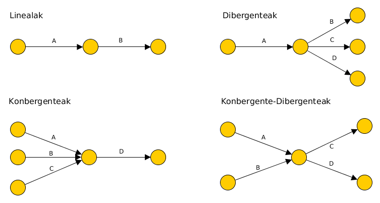
PERT: Aurrekotasunak jaso
Kate-matrizea: lerroaren jarduea hasteko zutabearen jarduera bukatuta egon behar du
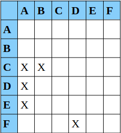
PERT: Aurrekotasunak jaso
Aurrekari-koadroa
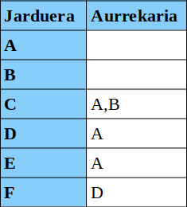
Jarduera fiktizioak
Denbora eta baliabiderik erabiltzen ez duten jarduerak, jardueren arteko erlazioak errepresentatzen dituztenak
Bi jarduerek edo gehiagok aurrekari amankomunak dituzte, baina ez guztiak: X A-ren aurrekaria da, Y B-ren aurrekaria da, A eta B C-ren aurrekariak dira; B D-ren aurrekaria da
Aldi berean erlazio lineal (B --> D) eta konbergenteak (A,B --> C) edo dibergenteak ditugu
Jarduera fiktizioak
Bi gertaeren artean hainbat jarduera daudenean
Adibidez A, B, eta C D-ren aurrekariak dira (Bi gertaeren artean jarduera paraleloak ditugu)
Planifikazioa (PERT)
Lasaiera totala kalkulatu
Lasaiera librea kalkulatu
Bide kritikoa aurkitu
Planifikazioa (PERT)
Demagun proiektua honako aurrekariekin:
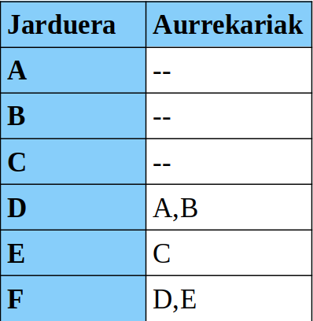
Planifikazioa (PERT)
[Zuek egiteko] dependentzien grafoa eraiki
Planifikazioa (PERT)
Dependentzien grafoa

Planifikazioa (PERT)
Adabegiak (gertaerak) zenbatuko ditugu (ezkerretik eskuinera eta goitik behera)
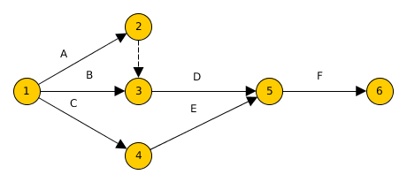
Planifikazioa (PERT)
Jarduera bakoitzaren iraupena kalkulatu
\[ I = {E_B+4E_Z+E_E \over 6} \]
- EB = Estimazio Baikorra
- EM = Estimazio Ziurrena
- EP = Estimazio Ezkorra
Planifikazioa (PERT)
Jarduera bakoitzaren iraupena adierazi:
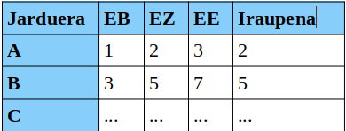
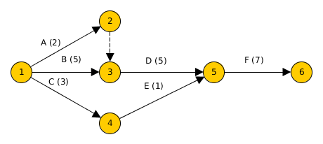
Planifikazioa (PERT)
Gertaera bakoitzeko, kalkulatu:
- Earliest Event Time (EET)
- Latest Event Time (LET)
Planifikazioa (PERT): EET
Gertaera bakoitzeko, kalkulatu:
- Hasierako gertaeraren EET-a 0 da
- Gainontzeko gertaerentzako:
- Gertaerara iristen den jarduera bakoitzeko, batu jardueraren iraupena eta jarduera irten den gertaeraren EET-a
- Aukeratu lortutako EET-rik handiena
Planifikazioa (PERT): EET/h2>
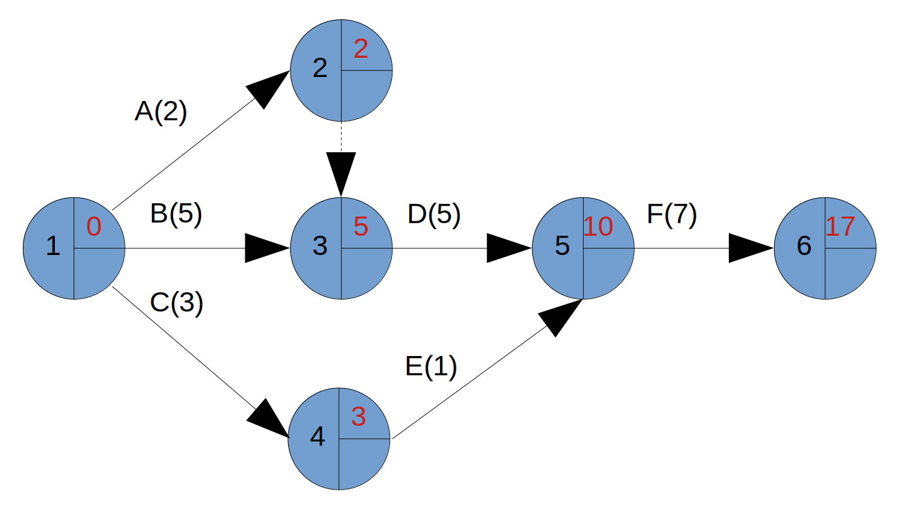
Planifikazioa (PERT): LET
Gertaera bakoitzeko, kalkulatu:
- Hasierako gertaeraren LET-a bere EET-a da
- Gainontzeko gertaerentzako:
- Gertaeratik irtetzen den jarduera bakoitzaren LET-a iristen den gertaerari kendu
- Aukeratu lortutako LET-ik txikiena
Planifikazioa (PERT): LET
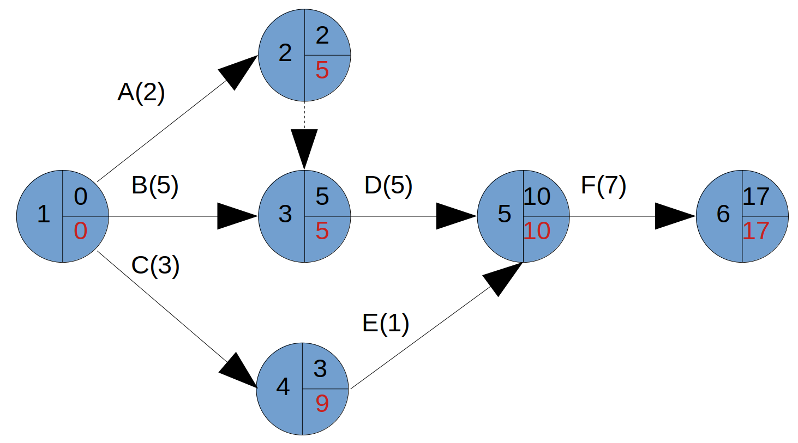
Planifikazioa (PERT): Lasaiera Librea
Jarduera baten Lasaiera Librea: helburuko gertaeraren EET-ari jatorrizko gertaeraren EET-a gehi jardueraren iraupena kendu:
\[ H_{ij}^L = EET_j - (EET_i + D_{ij}) \]
Lasaiera libreak adierazten du zenbat denbora unitate atzeratu daitekeen jarduera hori proiektuaren bukaera datan eta beste jardueren hasiera datan eraginik izan gabe
Planifikazioa (PERT): Lasaiera Totala
Helburuko gertaeraren LET-ari jatorrizko jardueraren EET-a gehi jardueraren iraupena kendu:
\[ H_{ij} = LET_j - (EET_i + D_{ij}) \]
Lasaiera totalak adierazten du zenbat denbora unitate atzeratu daitekeen jarduera hori proiektuaren iraupenean eraginik izan gabe
Planifikazioa (PERT): Lasaieren Kalkulua
Lasaierak kalkulatzerakoan, gertaera N batetik ateratzen diren jarduera guztiak fikziozkoak badira, gertaera hori ez dugu kontuan edukiko
Bere ordez jarduera fiktizioa heltzen den gertaeraren denborak erabiliko dira. Bat baino gehiago badaude, N gertaerako LET-a jartzeko erabili dena aukeratuko da
Beharrezkoak ez diren jarduera fiktizioak erabiltzea ez da akatsa, baina kalkuluak zailtzen ditu eta ekiditen saiatu beharko gara
Planifikazioa (PERT): Bide Kritikoa
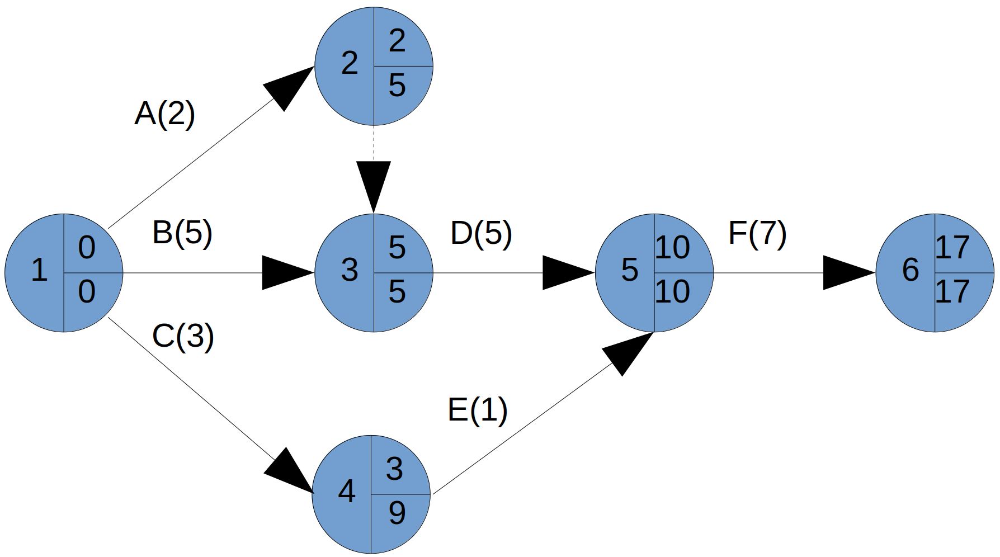
Planifikazioa (PERT): Bide Kritikoa
Lasaiera total zero duten jarduerak jarduera kritikoak dira
Sortzen duten bidea bide kritikoa da
Planifikazioa (PERT): Bide Kritikoa

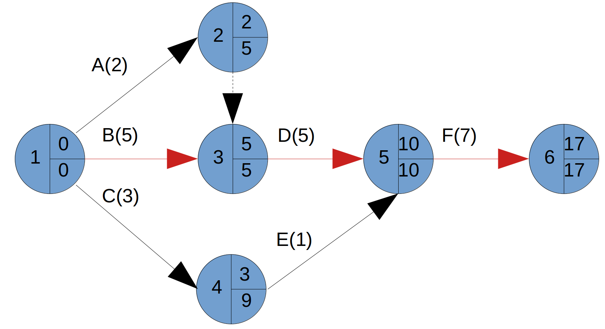
Planifikazio teknikak. CPM
Oinarriak PERT-en berberak
CPM-en denbora bakarra erabiltzen da jardueren iraupena estimatzeko
CPM determinista da eta PERT probabilistikoa
Planifikazio teknikak: ROY
Grafo bat sortzen da ere, baina:
- Nodoak jarduerak dira
- Arkuek aurrekotasuna adierazten dute
Planifikazio teknikak (ROY): Aurrekotasun motak
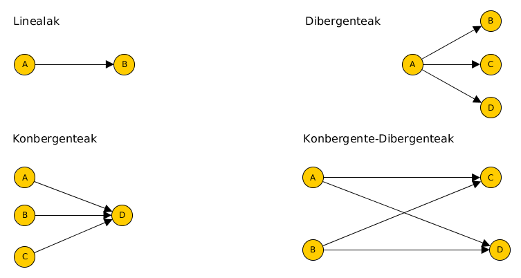
Planifikazio teknikak (ROY): Aurrekotasun motak
Grafoa eraikitzeko bi jarduera osagarri gehitu behar dira:
- Hasierako jarduera
- Bukaerako jarduera
Gure benetako jardueren artean lehenengoa izan daitekeen jarduera bakarra badago ez dugu hasierako jarduerarik sortuko. Era berean, azkena izan daitekeen jarduera bakarra badago ez dugu bukaerako jarduera sortuko
Planifikazio teknikak (ROY)
ROY-k ere aurrekotasun taula edo kate-matrizea erabiltzen du
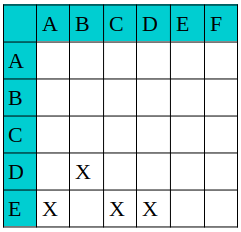
Planifikazio teknikak (ROY)
Nodo bakoitza lauki batekin errepresentatzen da:
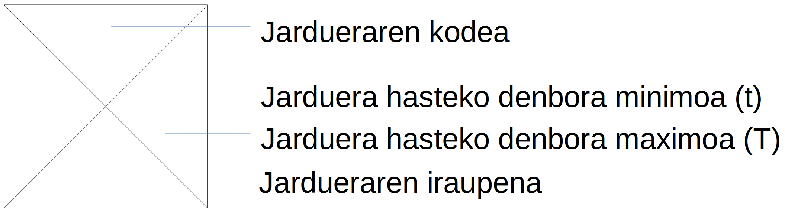
Planifikazio teknikak (ROY)
Arkuen gainean, arkua ateratzen den jardueraren iraupena (atzerapena barnean eduki dezake)
Jardueraren hasteko denbora minimoa kalkulatzeko:
- Jarduerara iristen den arku bakoitzeko, arku hori ateratzen den jardueraren hasteko denbora minimoa eta arkuaren balioa batu
- Batuketa guztien maximoa aukeratu
Planifikazio teknikak (ROY)
Jardueraren hasteko denbora maximoa:
- Nodotik ateratzen den arku bakoitzaren balioa kendu behar zaio arku hori iristen den jardueraren hasteko denbora maximoari
- Kenketa horien minimoa hartu
Planifikazio teknikak (ROY)
K jardueraren lasaiera totala bere hasteko denbora maximo eta minimoaren arteko diferentzia da:
\[ L_{K}^T = T_{K} - t_{K} \]
Planifikazio teknikak (ROY)
K jardueraren lasaiera librea:
\[ H_{K}^L = min[t_{P} - t_{K} - D_{KP}]\forall P \]
Non P K-ren ondoren dauden jarduerak diren eta I kp K eta P jarduerak lotzen dituen arkuaren balioa
Planifikazio teknikak: Aurrekotasunak
Jardueren grafoaren egitura ROY-ren berdina da:
- Nodoak jarduerak dira
- Arkuek jardueren aurrekotasuna adierazten dute
Planifikazio teknikak: Aurrekotasunak
Lau aurrekotasun mota onartzen ditu:
- Amaiera - Hasiera (AH)
- Hasiera - Hasiera (HH)
- Amaiera - Amaiera (AA)
- Hasiera - Amaiera (HA)
Planifikazio teknikak: Aurrekotasunak

Planifikazio teknikak: Aurrekotasunak
Amaiera - Hasiera (Aukera: D atzerapenarekin): B bakarrik has daiteke A bukatu eta D denbora-unitate pasa ondoren
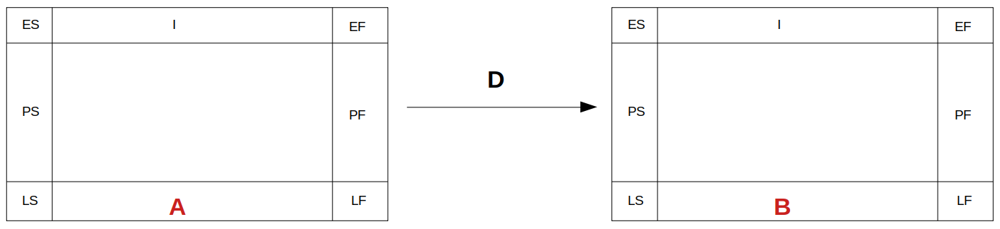
Planifikazio teknikak: Aurrekotasunak
Hasiera - Hasiera (Aukera: D atzerapenarekin): B bakarrik has daiteke A hasi eta D denbora-unitate pasa ondoren
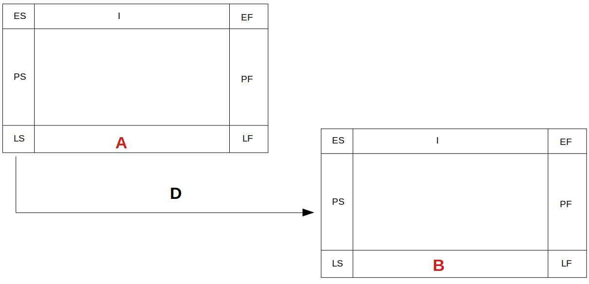
Planifikazio teknikak: Aurrekotasunak
Amaiera - Amaiera (Aukera: D atzerapenarekin): B bakarrik bukatu daiteke A bukatu eta D denbora-unitate pasa ondoren
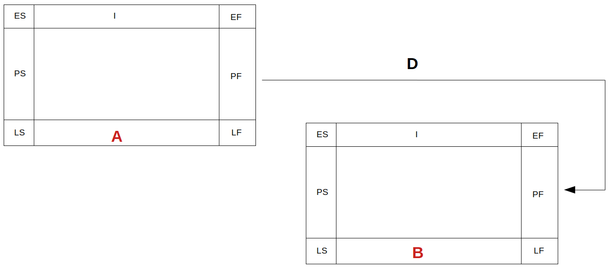
Planifikazio teknikak: Aurrekotasunak
Hasiera - Amaiera (Aukera: D atzerapenarekin): B bakarrik bukatu daiteke A hasi eta D denbora-unitate pasa ondoren
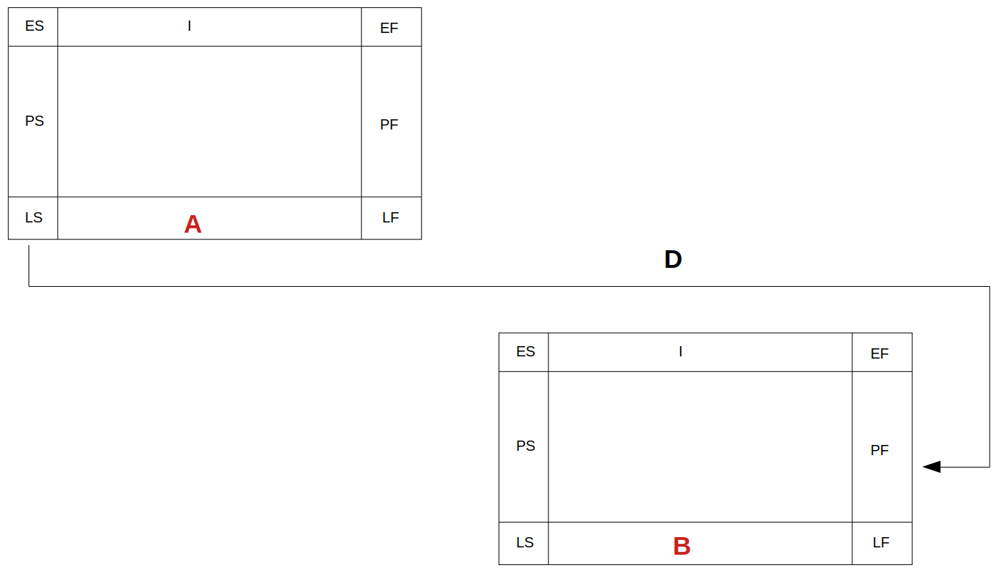
Planifikazio teknikak: Aurrekotasunak
Grafoa eraikitzeko:
- Hasierako jarduerak identifikatu
- Grafoaren egitura sortu jardueren exekuzio-sekuentzia kontuan hartuz
- Denbora inposatuak existitzen badira, adierazi
- Atzerapenak adierazi
Planifikazio teknikak: Aurrekotasunak
Lehenengo ES eta EF kalkulatuko ditugu:
- Hasierako jarduerentzat: ES=0, EF=bere iraupena
- Besteentzat (adibidea: X jarduerarentzat): X-ren aurrekariak eta data inposatuak begiratu. Bakoitzaren eraginez ES eta EF bat kalkulatu (ikus ondorengo gardenkia)
- (ES,EF) bikoterik handiena izango dira X jardueraren ES eta EF
Planifikazio teknikak: Aurrekotasunak
ES eta EF-ren kalkulua aurrekotasun/daten eraginez:
- HH aurrekotasunentzat (A jard): ES(X)_a=ES(A)+Da; EF(X)_a=ES(X)_a+Ix
- AH aurrekotasunentzat (B jard): ES(X)_b=EF(B)+Db; EF(X)_b=ES(X)_b+Ix
- HA aurrekotasunentzat (C jard): EF(X)_c=ES(C)+Dc; ES(X)_c=EF(X)_c-Ix
- AA aurrekotasunentzat (D jard): EF(X)_d=ES(D)+Dd; ES(X)_d=EF(X)_d-Ix
- PS: ES(X)_ps=PS; EF(X)_ps=ES(X)_ps+Ix
- PF: EF(X)_pf=PF; ES(X_pf)=EF(X)_pf-Ix
Planifikazio teknikak: Aurrekotasunak
ES eta EF-ren kalkulua aurrekotasun/daten eraginez:
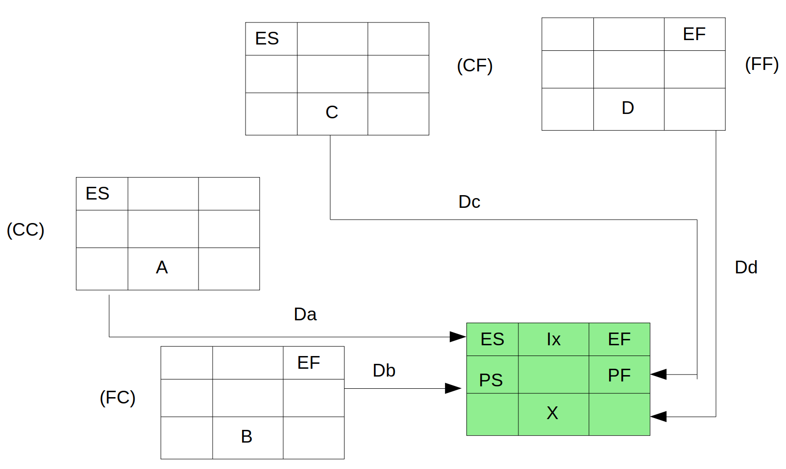
Planifikazio teknikak: Aurrekotasunak
Gero LS eta LF kalkulatuko ditugu:
- Bukaerako jarduerentzat:
- LF = diagramako EF handiena
- LS = LF – jardueraren iraupena
- Besteentzat (adibidea: X jarduerarentzat): X-ren ondorengoak eta data inposatuak begiratu. Bakoitzaren eraginez LS eta LF bat kalkulatu (ikus ondorengo gardenkia)
Planifikazio teknikak: Aurrekotasunak
Gero LS eta LF kalkulatuko ditugu (jarraipena):
- (LS,LF) bikoterik txikiena izango dira X jardueraren LS eta LF (Salbuespen bat dago: Beti bete behar da ES<=LS eta EF<=LF, baina data inposatuen ondorioz batzutan ez da beteko eta zuzendu beharko da 1. ariketa)
Planifikazio teknikak: Aurrekotasunak
LS eta LF-ren kalkulua:
- HH aurrekotasunentzat (A jard): LS(X)_a=LS(A)-Da; LF(X)_a=LS(X)_a+Ix
- AH aurrekotasunentzat (B jard): LF(X)_b=LS(B)-Db; LS(X)_b=LF(X)_b-Ix
- HA aurrekotasunentzat (C jard): LS(X)_c=LF(C)-Dc; LF(X)_c=LS(X)_c+Ix
- AA aurrekotasunentzat (D jard): LF(X)_d=LF(D)-Dd; LS(X)_d=LF(X)_d-Ix
- PS: LS(X)_ps=PS; LF(X)_ps=LS(X)_ps+Ix
- PF: LF(X)_pf=PF; LS(X)_pf=EF(X)_pf-Ix
Planifikazio teknikak: Aurrekotasunak
LS eta LF-ren kalkulua:
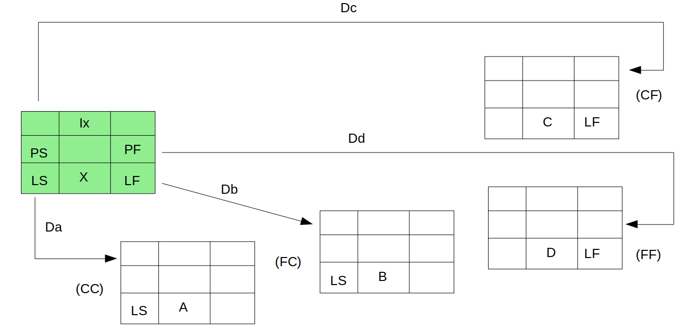
Planifikazio teknikak: Aurrekotasunak
Jardueren lasaiera:
- K jardueraren lasaiera totala:
\[ L_{K}^T = LF_{K} - EF_{K} \]
Planifikazio teknikak: Aurrekotasunak
Jardueren lasaiera:
- Lasaiera librea: ondorengoen artean txikiena:
- ES (hurrengoa) - (EF + D), erlazioa AH bada
- ES (hurrengoa) - (ES + D), erlazioa HH bada
- EF (hurrengoa) - (EF + D), erlazioa AA bada
- EF (hurrengoa) - (ES + D), erlazioa HA bada